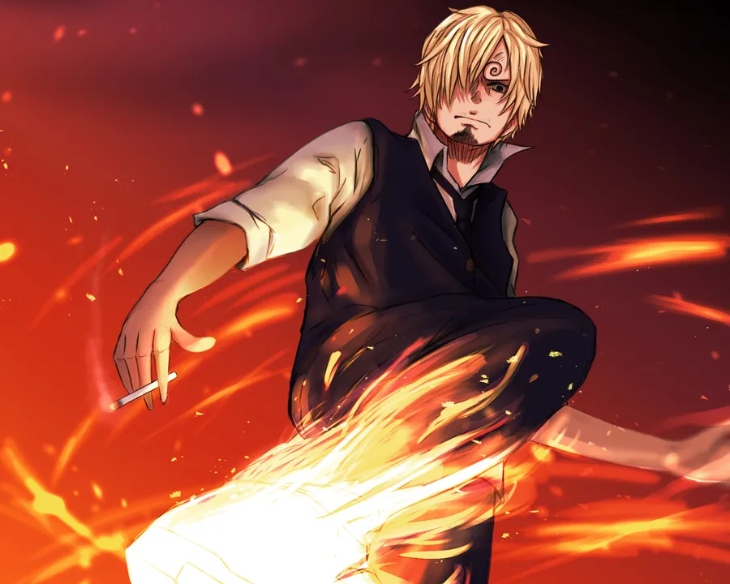

Cooking the All Blue one plate at a time.
I am Sanji, the Straw Hat Pirates’ cook. Born a prince of the Germa 66 kingdom, I left royalty behind to pursue my dream of discovering the All Blue—a sea where all the fish of the world gather. I fight using my legs to preserve my hands for cooking and value chivalry and respect, especially toward women.
From Baratie to Whole Cake Island, from Enies Lobby to Wano, I’ve faced countless foes—CP9, Big Mom Pirates, Queen the Plague—and cooked through every storm. My bounty has risen steadily, acknowledging my contributions in both combat and strategy.
Current Bounty: 1,032,000,000 Berries
“His cooking saved our lives more than once!” – Luffy
“Black‑Leg kicks and a heart of gold.” – Nami
“A real gentleman... even if a pervy one.” – Robin